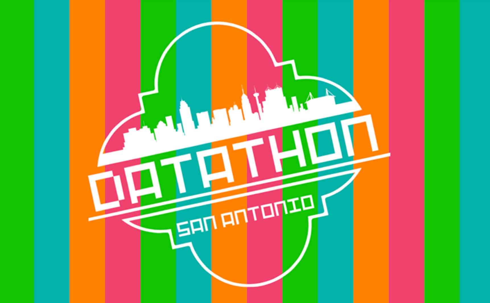
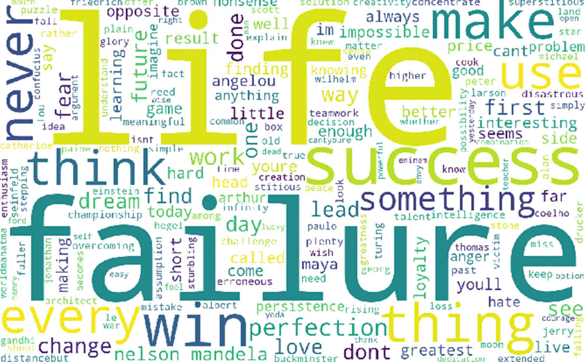
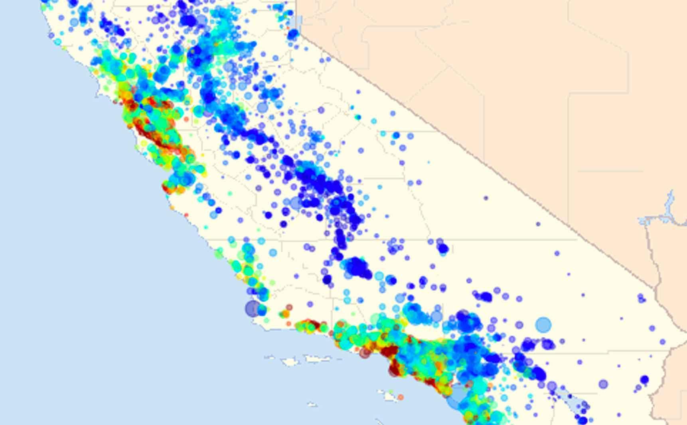

Data Science Projects
You've found my curiosity museum. On this website, you'll find some of the data science projects. Visit my other sites... for fun. LOL.
Predicting recividism in domestic violence cases. In progress.
#classification

Exploratory data analysis on several datasets. In progress.
#time-series

Analyzing employment availability of Codeup alumni.
#nlp

An end-to-end machine learning project from a hands-on book.
#regression